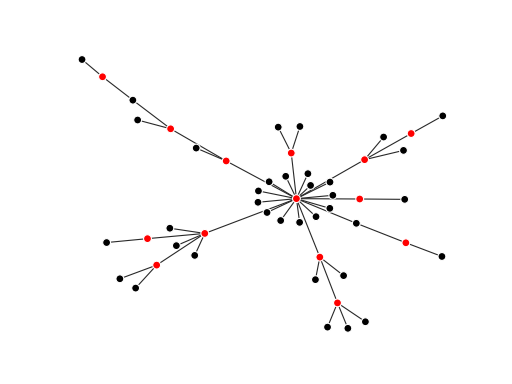

Grave—Dead simple graph visualization¶
Grave is a graph visualization package combining ideas from Matplotlib, NetworkX, and seaborn. Its goal is to provide a network drawing API that covers the most use cases with sensible defaults and simple style configuration. Currently, it supports drawing graphs from NetworkX.
Example¶
Here, we create a graph and color the nodes in its minimum weighted dominating set:
>>> import matplotlib.pyplot as plt
>>> import networkx as nx
>>> from networkx.algorithms.approximation.dominating_set import min_weighted_dominating_set
>>>
>>> from grave import plot_network
>>>
>>> network = nx.powerlaw_cluster_graph(50, 1, .2)
>>> dom_set = min_weighted_dominating_set(network)
>>>
>>> for node, node_attrs in network.nodes(data=True):
... node_attrs['is_dominator'] = True if node in dom_set else False
...
>>> def color_dominators(node_attrs):
... if node_attrs.get('is_dominator', False):
... return {'color': 'red'}
... else:
... return {'color': 'black'}
...
>>> fig, ax = plt.subplots()
>>> plot_network(network, node_style=color_dominators)
<grave.grave.NXArtist object at ...>
{kind=link}
{kind=link}
